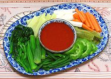

|
Vegetable Plate - Raw, CookedBurma | ||||
| Serves: Effort: Sched: DoAhead: |
any # ** varies Yes |
This is an almost universal accompaniment to lunch in Burma. Many restaurants bring this plate out as soon as you sit down at a table. | |||
| The photo example has; (raw) Daikon Radish, Carrots, Bitter Melon; (cooked) Long Beans, Okra, Gai Lan, Sweet Potato; (pickled) Mustard Greens - all with Burmese Chili Garlic Sauce. | |||||
|
Parboiled Vegies Long Beans (1) Okra Cauliflower Florets Broccoli Florets Water Spinach Stems Gai Lan Sprigs (2) Daikon Sticks (3) Luffa Sticks Sweet Potato Sticks Stem Lettuce Raw Vegies Cucumber Sticks (4) Carrot Sticks Daikon Sticks (3) Cabbage Wedges Long Beans (1) Zucchini Sticks Jicama Sticks Bitter Melon Slices (5) Celery Sticks (8) Okra Pickled Vegies Mustard Greens (6) Bamboo Shoots Pickled Long Beans Condiments Chili Garlic Sauce (7) |
Selection Select 3 or 4 items from the Parboiled Vegies and 3 or 4 from the Raw Vegies, and perhaps one from the Pickled Vegies. You should have about 6 pieces per person. You may serve with dip(s) or without. Par Boiling
|